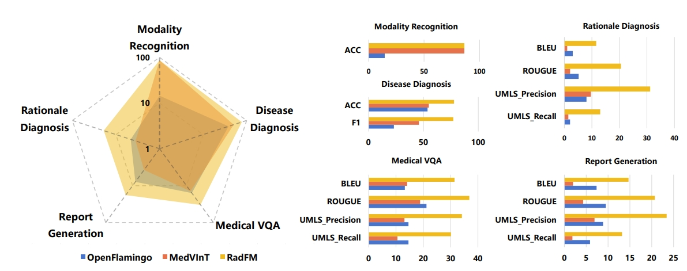
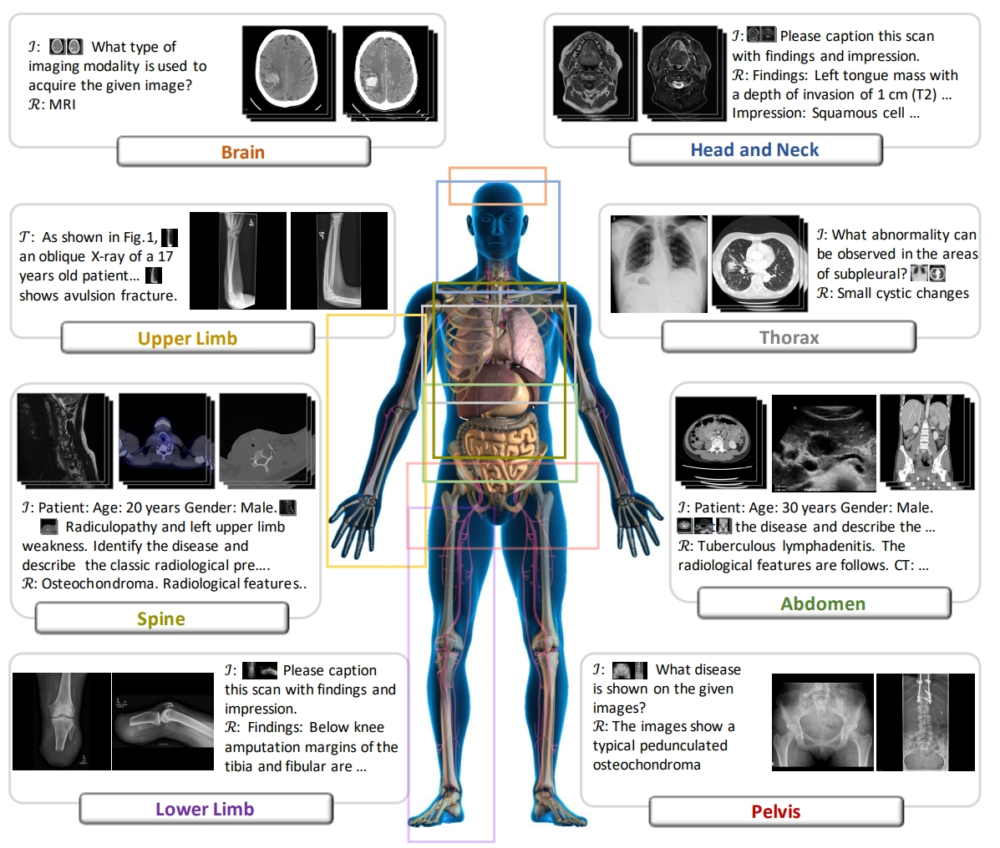
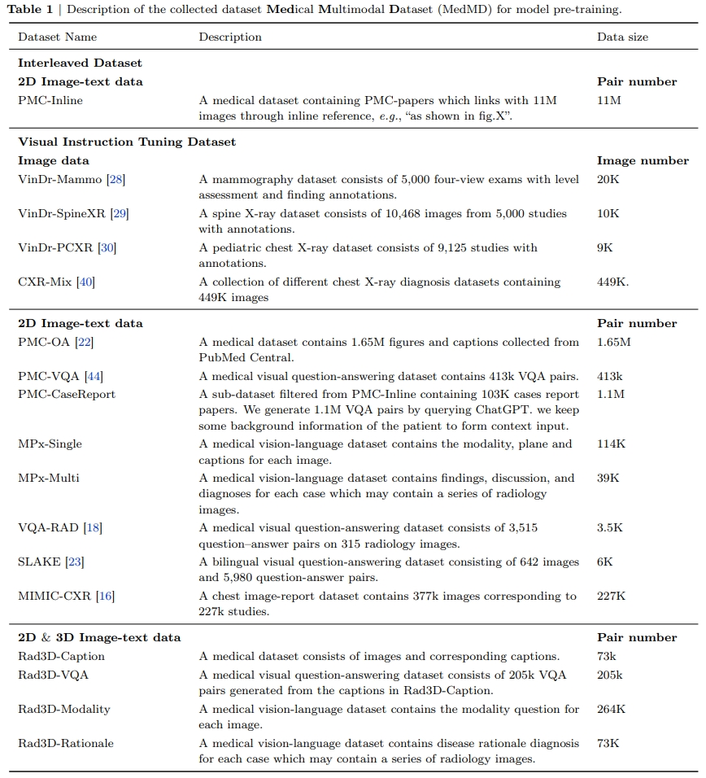
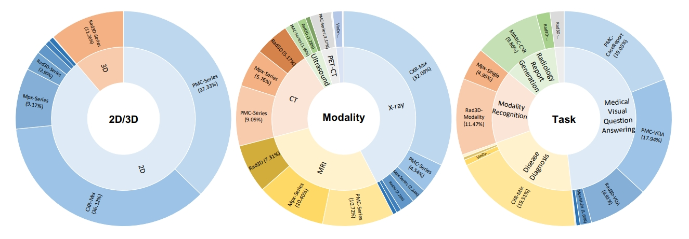
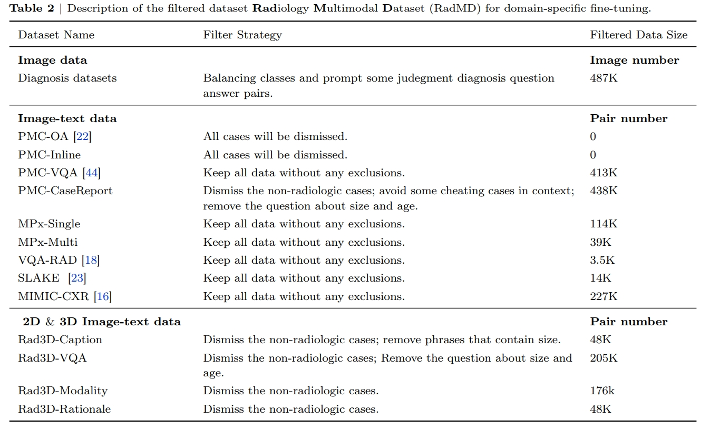
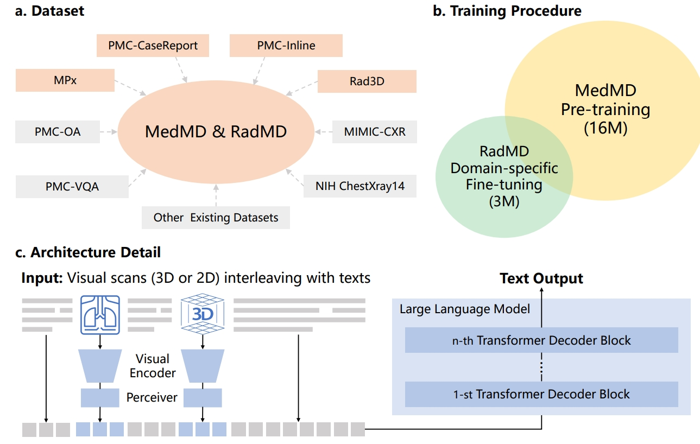
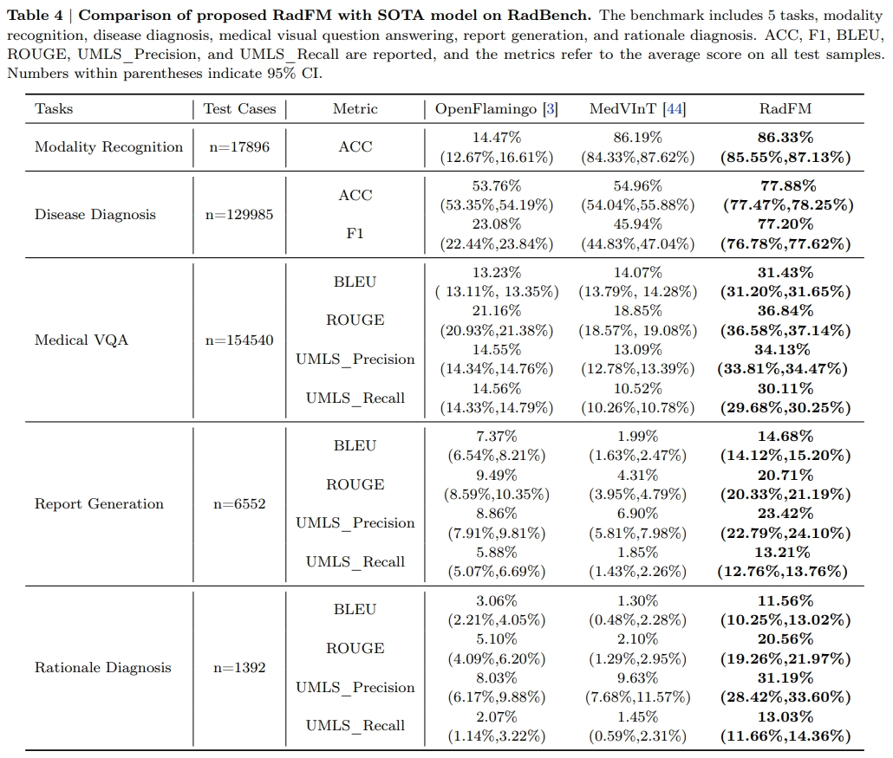
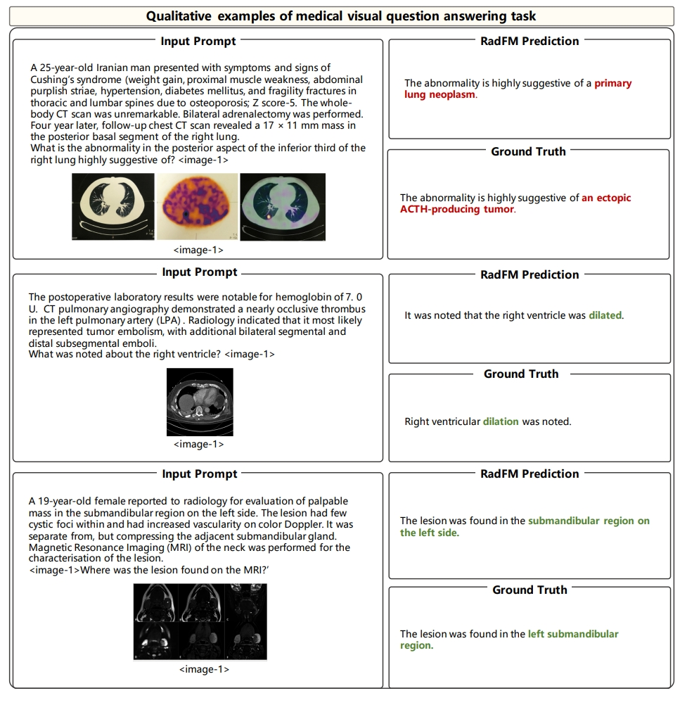
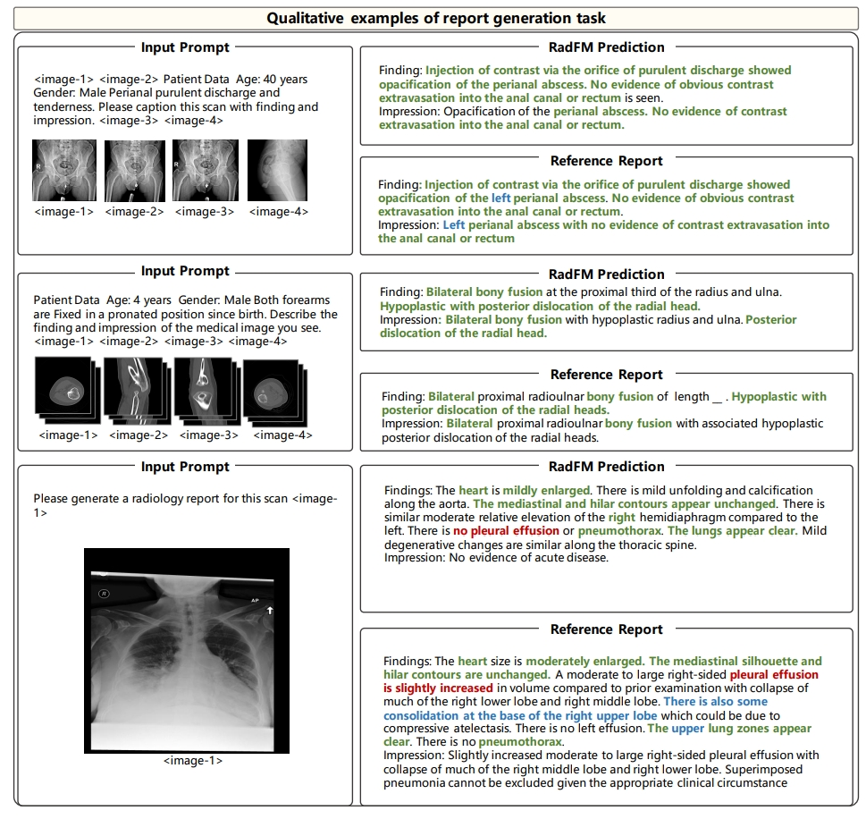
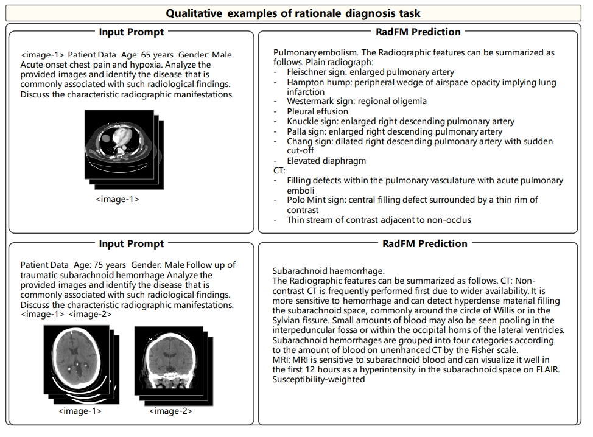

Towards Generalist Foundation Model for Radiology
|
|
1CMIC, Shanghai Jiao Tong University
|
2Shanghai AI Laboratory
|
Abstract
In this study, we aim to initiate the development of Radiology Foundation Model, termed as RadFM.
We consider the construction of foundational models from the perspectives of data, model design, and evaluation thoroughly.
Our contribution can be concluded as follows:
(i), we construct a large-scale Medical Multi-modal Dataset, MedMD, consisting of 16M 2D and 3D medical scans.
To the best of our knowledge, this is the first multi-modal dataset containing 3D medical scans.
(ii), We propose an architecture that enables visually conditioned generative pre-training,
allowing for the integration of text input interleaved with 2D or 3D medical scans to generate response for diverse radiologic tasks.
(iii), we propose a new evaluation benchmark that comprises five tasks, aiming to comprehensively assess the capability of foundation models in handling practical clinical problems. Our experimental results confirm that RadFM significantly outperforms existing multi-modal foundation models. The codes, data, and model checkpoint will all be made publicly available to promote further research and development in the field.

Result Overview
The general comparison between RadFM and different SOTA methods, i.e., OpenFlamingo and MedVInT
On the left we plot the radar figure of the three methods, the average of different metrics are plotted and the coordinate axes are
logarithmized. On the right, we draw the comparison on the five different tasks with different metrics. Both two can indicate
the superiority of RadFM, surpassing former methods significantly.

Datasets
Bird-view of MedMD
Overview of Medical Multimodal Dataset (MedMD). Our collected data covers the majority of radiologic modalities
and anatomical regions of the human body, such as brain, head and neck, thorax, spine, abdomen, upper limb, lower limb, and
pelvis, etc. The dataset mixes two types of datasets, i.e., interleaved datasets and visual instruction datasets, including both 3D and 2D scans. T refers to the
text of interleaved data, I refers to the instruction input text, and R refers to the response text.

The individual componet of MedMD.
Differring from previous multimodal datasets, our dataset is visual-language interleaved and contains 3D data.
To the best of our knowledge, this is probably the largest open-source medical multi-modal dataset available.
In table, more detailed case numbers are shown.

The radiologic filtered version, RadMD
For domain-specific finetuning, we filter out the non-radiology images from MedMD, and construct a clean
subset, named Radiology Multimodal Dataset (RadMD), dedicating to supervised visual instruction-tuning.
It contains a total of 3M images, spanning various data formats, modalitieis, and tasks, as shown in the figure. More comprehensive details regarding the filtering process and the
resulting dataset sizes can be found in following table.


Towards Building Generalist Foundation Model for Radiology
we propose a learning paradigm for unifying different medical tasks into a
generative framework, and, then, we first pre-train the model on MedMD, following fine-tuned on RadMD for domain-specific adaptation.
The c part in figure shows our main architecture, we unified encoding 2D and 3D images, and multi-modal encoding by insert image embedding into texts.

Final Results
Quantitative Results
RadFM outperforms previous methods by a significant margin across all five
tasks, showcasing its exceptional capabilities. Notably, RadFM excels in particularly challenging tasks such as
medical VQA, report generation, and rationale diagnosis, which demand profound understanding of both
textual information and images.

Case Study
In medical VQA, RadFM demonstrates its ability to comprehend the questions and provide
answers in a consistent format, accurately addressing the questions. However, in some challenging cases,
such as the first example where the question pertains to the type of abnormality, the model faces difficulty
predicting "ectopic ACTH-producing tumor" and mistakenly identifies it as “primary lung neoplasm”, that
requires fine-grained discrimination within tumor types.

Additionally, for report generation, we also show several cases. The
blue color denotes instances where the model missed this information that has been mentioned in the reference reports.
In general, RadFM can be observed
that the model is capable of identifying fundamental diseases and, in some cases, performs exceptionally well.
However, the report generated by MedFM may lack specific location information like the 'left' or 'right' of an
anatomy region.

Finaly for rationale diagnosis, on both cases, RadFM can make accurate diagnosis in free form and give
further related radiologic reasoning. However, the limitation can also be observed that the reasoning results
are still general and more like background medical knowledge, yet not specific to the input case.

Conclusion
In conclusion, in this paper, we have constructed a complete set of medical foundation model-building processes,
including data collection, problem formulation, model design, training, and evaluation. We construct the
largest medical multi-modal database in this paper and in model capabilities, compared to existing work,
our model is able to process multiple 3D or 2D image inputs interleaved with texts, which fits the practical
usage more. We surpass the latest open-source multi-modal foundation model significantly. We will release
all corresponding data, codes, and models. We believe this can greatly promote the development of medical
foundation models.